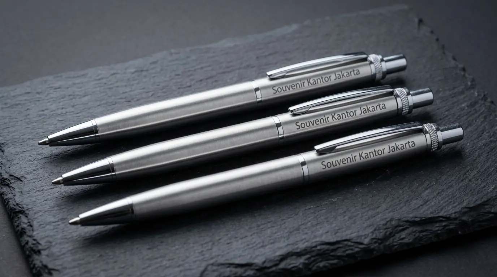

Pulpen Souvenir Kantor Custom Logo Elegan untuk Promosi Bisnis
 Tim SEO & Merchandising
2 September 2026
5 Menit Baca
Tim SEO & Merchandising
2 September 2026
5 Menit Baca

Pulpen souvenir kantor custom logo adalah alat tulis promosi yang efektif untuk meningkatkan visibilitas brand. Tersedia dalam berbagai jenis mulai dari plastik ekonomis hingga metal eksklusif, serta ramah lingkungan. Artikel ini membahas keunggulan, jenis, cara optimasi desain, dan tips pemesanan pulpen promosi untuk kebutuhan korporat Anda.
Pulpen souvenir kantor adalah alat tulis promosi yang dicetak logo perusahaan untuk media branding efektif pada event bisnis, seminar, dan kebutuhan korporat.
- Menguatkan visibilitas brand secara berkelanjutan dalam aktivitas harian klien.
- Menawarkan fleksibilitas anggaran mulai dari tipe plastik ekonomis hingga metal eksklusif.
- Menyediakan area cetak logo yang presisi melalui teknik pad print maupun grafir laser.
- Meningkatkan kredibilitas dan profesionalisme perusahaan di mata mitra bisnis.
Mengapa Pulpen Souvenir Kantor Sangat Efektif untuk Promosi Bisnis?
Pulpen souvenir kantor memberikan nilai guna tinggi yang dipakai harian oleh penerima, sehingga logo perusahaan terus terlihat dan memperkuat ingatan merek secara konsisten.
Berdasarkan laporan Global Advertising Specialties Market Survey 2025, pulpen promosi menghasilkan 3.000 impressions sepanjang masa pakainya dengan biaya per impresi termurah di antara produk merchandise lainnya. Studi Indonesian Corporate Branding Report 2026 menunjukkan bahwa 88% profesional di Jakarta menyimpan pulpen souvenir kantor yang mereka terima dari acara seminar atau pertemuan bisnis selama lebih dari 9 bulan.
Keunggulan utama penggunaan instrumen ini meliputi:
- Retensi Tinggi: Pengguna berinteraksi langsung dengan logo Anda setiap kali menulis dokumen.
- Efisiensi Anggaran: Biaya produksi per unit sangat terjangkau dibanding media iklan konvensional.
- Jangkauan Luas: Pulpen sering berpindah tangan, memperluas eksposur brand ke audiens baru.
| Jenis Pulpen | Tipe Branding | Segmen Target |
|---|---|---|
| Metal Premium | Grafir Laser | Eksekutif & Klien VIP |
| Plastik Streamline | Pad Print/UV Print | Peserta Seminar & Event |
| Ramah Lingkungan | Screen Print | Kampanye ESG / Eco |
Jenis Pulpen Souvenir Kantor Apa yang Paling Sesuai Kebutuhan Anda?
Variasi pulpen souvenir kantor mencakup tipe plastik untuk mass event, tipe metal eksklusif untuk VIP, dan tipe ramah lingkungan untuk citra keberlanjutan.
Pulpen Metal Eksklusif
Pulpen berbahan logam memberikan bobot mantap dan kesan mewah. Diukir menggunakan teknik grafir laser sehingga logo tidak mudah pudar. Ideal untuk jajaran manajemen dan mitra strategis.
Pulpen Plastik Ekonomis
Opsi utama untuk pembagian massal seperti pameran, expo, dan seminar kit. Tersedia dalam berbagai pilihan warna bodi yang sesuai dengan identitas visual perusahaan.
Pulpen Eco-Friendly
Dibuat dari bahan daur ulang seperti kertas daur ulang atau serat bambu. Cocok bagi perusahaan yang ingin menonjolkan komitmen terhadap kelestarian lingkungan dan nilai-nilai ESG.
Pulpen Twist / Retractable
Model dengan mekanisme putar atau tekan yang praktis. Memberikan kesan modern dan fungsional, cocok untuk lingkungan kerja dinamis.

Bagaimana Mengoptimalkan Desain Logo pada Pulpen Souvenir?
Pengoptimalan logo pada pulpen souvenir dilakukan dengan memilih teknik cetak yang tepat serta memperhatikan ukuran area cetak agar tulisan tetap terbaca jelas.
Pad Print
Ideal untuk logo multi-warna pada permukaan cembung bodi plastik.
Grafir Laser
Memberikan hasil ukiran permanen berwarna perak atau emas pada bodi metal.
Cetak UV Digital
Memungkinkan cetak grafis bergradasi penuh dengan presisi tinggi.
Pastikan rasio logo disesuaikan dengan diameter pulpen. Hindari teks yang terlalu rumit agar pesan utama merek Anda tetap langsung terbaca dalam sekali lihat.
Apa Saja Kesalahan dalam Memilih Pulpen Souvenir Kantor?
Kesalahan utama mencakup pemilihan tinta berkualitas rendah, area cetak logo terlalu kecil, serta memesan secara mendadak tanpa memperhitungkan waktu produksi.
- Mengabaikan Kualitas Tinta: Pulpen yang seret atau bocor akan memberikan kesan negatif terhadap citra perusahaan Anda.
- Ukuran Logo Tidak Proporsional: Logo yang terlalu kecil membuat nama perusahaan sulit dikenali.
- Pemesanan Terburu-buru: Mengurangi waktu untuk pengecekan sampel (proofing) sebelum produksi massal.
- Mengabaikan Target Audiens: Memberikan pulpen metal eksklusif untuk peserta seminar massal akan membuang anggaran, sementara pulpen plastik untuk klien VIP dapat merusak persepsi premium.
Butuh Pulpen Custom Logo untuk Perusahaan Anda?
Konsultasikan kebutuhan pulpen souvenir kantor custom logo dengan tim kami untuk mendapatkan rekomendasi jenis dan desain terbaik sesuai anggaran Anda.
Konsultasi SekarangPertanyaan Populer Seputar Pulpen Souvenir Kantor
Kesimpulan Praktis
Memilih pulpen souvenir kantor custom logo merupakan strategi promosi berbiaya efisien dengan dampak brand awareness jangka panjang. Pastikan Anda menyesuaikan bahan pulpen dengan profil penerima acara.
Untuk kebutuhan pengadaan merchandise bisnis terpercaya, percayakan pada Souvenir Kantor Jakarta. Kami siap membantu Anda menghadirkan produk berkualitas tinggi dengan cetakan logo presisi tinggi untuk mengangkat citra perusahaan Anda. Dapatkan penawaran harga terbaik dan konsultasi desain gratis sekarang juga dengan menghubungi tim ahli kami.